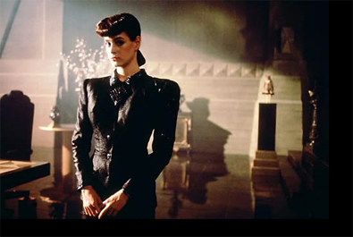
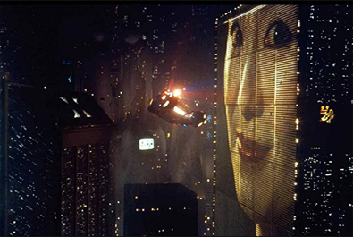
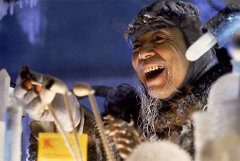
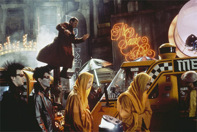
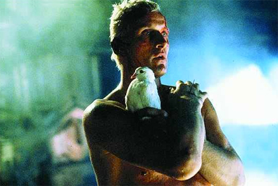
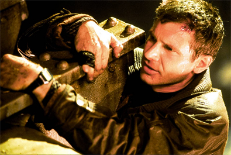

Michael Deeley
Hampton Fancher
David Peoples
Lawrence G. Paull (production designer)
David Snyder (art director)
Douglas Trumbull (special effects)
Richard Yuricich (special effects)


Rick Deckard
Roy Batty
Gaff
J.F. Sebastian


An adaptation of Philip K. Dick's 1968 novel Do Androids Dream of Electric Sheep?, the film is set in a dystopian future Los Angeles of 2019, in which synthetic humans known as replicants are bio-engineered by the powerful Tyrell Corporation to work on space colonies. When a fugitive group of advanced replicants led by Roy Batty (Hauer) escapes back to Earth, burnt-out cop Rick Deckard (Ford) reluctantly agrees to hunt them down.
Blade Runner initially underperformed in North American theatres and polarised critics; some praised its thematic complexity and visuals, while others critiqued its slow pacing and lack of action. It later became an acclaimed cult film regarded as one of the all-time best science fiction films. Hailed for its production design depicting a decaying future, Blade Runner is a leading example of neo-noir cinema. The film's soundtrack, composed by Vangelis, was nominated in 1982 for a BAFTA and a Golden Globe as best original score.
The film has influenced many science fiction films, video games, anime, and television series. It brought the work of Philip K. Dick to the attention of Hollywood, and several later big-budget films were based on his work, such as Total Recall (1990), Minority Report (2002) and A Scanner Darkly (2006).
The Bradbury Building in downtown Los Angeles served as a filming location, and a Warner Bros. backlot housed the 2019 Los Angeles street sets. Other locations included the Ennis-Brown House and the 2nd Street Tunnel. Test screenings resulted in several changes, including adding a voice-over, a happy ending, and the removal of a Holden hospital scene. The relationship between the filmmakers and the investors was difficult, which culminated in Deeley and Scott being fired but still working on the film.
Ridley Scott credits Edward Hopper's painting Nighthawks and the French science fiction magazine Métal Hurlant, to which the artist Jean "Moebius" Giraud contributed, as stylistic mood sources. He also drew on the landscape of "Hong Kong on a very bad day" and the industrial landscape of his one-time home in northeast England. The visual style of the movie is influenced by the work of futurist Italian architect Antonio Sant'Elia.
The film's special effects are generally recognised to be among the best of all time, using the available (non-digital) technology to the fullest. Special effects engineers, who worked on the film, are often praised for the innovative technology they used to produce and design certain aspects of those visuals. Many effects used techniques which had been developed during the production of Close Encounters of the Third Kind.
Seven different versions of Blade Runner exist as a result of controversial changes requested by studio executives. A director's cut was released in 1992 after a strong response to test screenings of a workprint. This, in conjunction with the film's popularity as a video rental, made it one of the earliest movies to be released on DVD. In 2007, Warner Bros. released The Final Cut, a 25th-anniversary digitally remastered version. This is the only version over which Scott retained artistic control.

